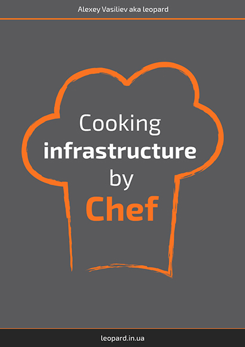
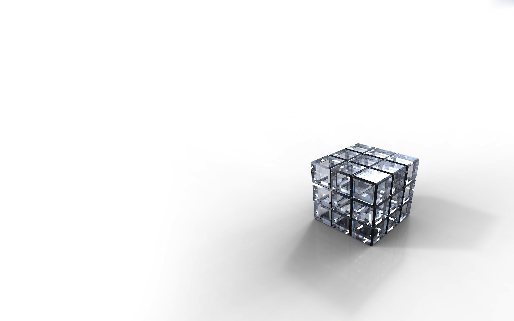

Alexey Vasiliev, Railsware
Alexey Vasiliev, Railsware


require "http/server"
server = HTTP::Server.new(8080) do |request|
HTTP::Response.ok "text/plain", "Hello world!"
end
puts "Listening on http://0.0.0.0:8080"
server.listenmy_array = [] # compilation error
my_array = [] of String | Int64
my_array = [] of Float64
my_array = [] of Array(Float64 | String)
my_array = [] of String | Float64 | Char | Symbol
my_array = [] of Bool | Nil
my_array = [1,2,3,4]
my_array = ["banana", "apple"]my_hash = {} # compilation error
my_hash = {} of Symbol => String
my_hash = {} of Symbol | String => Float64 | String
my_hash = {
:name => "Exilor",
"age" => 25,
0 => 1,
true => false
}["a", "b", "c"].map(&.upcase)
["a", "b", "c"].map(&.*(3))def add(a : String, b : String)
"#{a} #{b}"
end
def add(a : (Int|Float), b : (Int|Float))
a + b
end
def add(a, b)
nil
endstruct Point
property x
property y
def initialize(@x, @y)
end
endclass Animal
getter type # attr_reader
setter name # attr_writer
property age # attr_accessor
def initialize(@type, @name, @age)
end
endclass Animal
private def my_private_method
# stuff
end
protected def my_private_method
# stuff
end
endtuple_example = {1, "hello", 'x'}
tuple_example = Tuple.new
tuple_example = Tuple.new(1, "hello", 'x')"This is string" # String
'c' # Charch = Channel(Int32).new
spawn do
loop
num = ch.receive
puts "Got #{num}"
end
end
(1..10).each{ |i| ch.send i }["cool", "super"].each do |obj|
define_method "get_#{obj}" do
puts "Got #{obj}"
end
endmacro define_getters(getters)
{% for obj in getters %}
def get_{{obj.id}}
puts {{ "Got " + obj }}
end
{% end %}
end
define_getters ["cool", "super"]macro compile_time_date
{{ `date`.stringify }}
end
puts compile_time_date// C code
double cos(double x);
double sin(double x);
// Crystal
lib LibC
fun cos(x : Float64) : Float64
fun sin(x : Float64) : Float64
endPerform an N-body simulation of the Jovian planets
$ time ruby nbody.rb 1000000
ruby nbody.rb 1000000 10.20s user 0.03s system 99% cpu 10.258 total
$ time ./nbody 1000000
./nbody 1000000 0.91s user 0.01s system 99% cpu 0.923 total
Repeatedly access a tiny integer-sequence
$ time ruby fannkuchredux.rb 10
73196
Pfannkuchen(10) = 38
ruby fannkuchredux.rb 10 17.34s user 0.10s system 188% cpu 9.242 total
$ time crystal fannkuchredux.cr
73196
Pfannkuchen(10) = 38
crystal fannkuchredux.cr 4.28s user 0.93s system 126% cpu 4.106 total
$ wrk -d 30 -c 10 http://localhost:9292
Running 30s test @ http://localhost:9292
2 threads and 10 connections
Thread Stats Avg Stdev Max +/- Stdev
Latency 7.48ms 3.31ms 50.25ms 78.05%
Req/Sec 682.32 78.61 840.00 71.83%
40780 requests in 30.02s, 3.66MB read
Requests/sec: 1358.40
Transfer/sec: 124.70KB
$ wrk -d 30 -c 10 http://localhost:8080
Running 30s test @ http://localhost:8080
2 threads and 10 connections
Thread Stats Avg Stdev Max +/- Stdev
Latency 505.22us 126.29us 3.77ms 82.49%
Req/Sec 9.86k 292.91 10.62k 75.42%
590420 requests in 30.10s, 56.87MB read
Requests/sec: 19615.19
Transfer/sec: 1.89MB